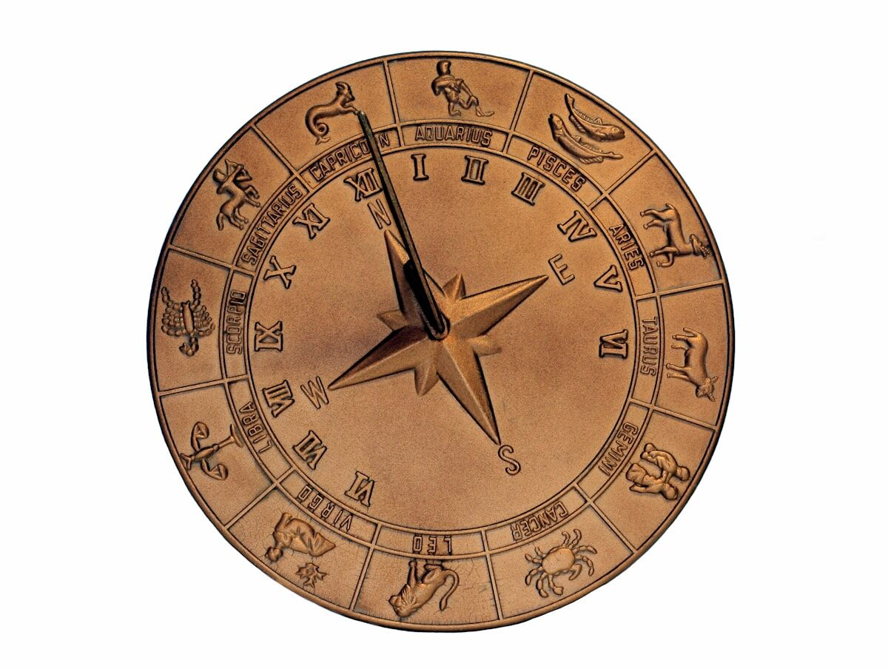

Trusted by thousands of callers nationwide
Love Astrology Reading by Phone — What the Stars Say About Your Love Life, 24/7
A love astrology reading explains why you love the way you do and what's really moving in your love life right now. Every astrologer on our line is hand-vetted by our master psychics — connect in under 60 seconds. Your first minute is $1 and you can hang up anytime.
- Hand-vetted readers
- Available 24/7
- Hang up anytime

Call and speak with a live astrologer for a love astrology reading that goes past your Sun sign to the placements that actually run your love life. No appointment, no waiting — first-time callers get an introductory rate of $1 per minute, or 15 minutes for $10, and you can hang up the moment you have your answer.
What Is a Love Astrology Reading?
A love astrology reading zooms in on the part of your chart that governs how you connect: Venus (how you love and what you value), Mars (desire and drive), the Moon (what you need to feel safe), and the 5th and 7th houses of romance and partnership — read against the transits moving through your chart right now. It's not a one-line Sun-sign horoscope. It's the personal version: why you're drawn to who you're drawn to, why certain patterns keep returning, and what's genuinely shifting in your love life at the moment.
What Does a Love Astrology Reading Tell Me?
More than "you're compatible with these three signs." Your astrologer reads how you give and receive love, the type of partner your chart pulls toward, where you tend to self-sabotage or over-give, and the timing of romantic openings based on transits like Venus and Jupiter touching your chart. If you're in something now, they'll look at what's supporting it and what's straining it. If you're single, they'll look at what's blocking connection and when the sky tends to open.
How Does a Love Astrology Reading Work by Phone?
Your astrologer calculates your chart from your birth details on their end and talks you through it live. Astrology doesn't need the reader in the room — the chart is the chart from anywhere. You give your date, time, and place of birth, your astrologer pulls the wheel and current transits, and they walk you through what it all says about your love life, pausing for your questions.
Do I Need My Partner's Birth Details?
Not for a personal love astrology reading focused on you — your own chart is enough to explain your patterns and timing. If what you really want is a direct chart-to-chart comparison, that's a synastry or astrology compatibility reading, and it works best with your partner's date, time, and place of birth. Tell your astrologer which you want; many callers start with their own love chart, then move into compatibility once they understand themselves first.
Who Is the Best Astrologer to Call for Love?
The best astrologer for matters of the heart is one who reads the love placements with both precision and warmth — honest about the hard aspects, never cold about them. Every reader on our line is hand-vetted by our master psychics, so you're not gambling on a stranger from a directory. Say you want a love astrology reading and we'll match you with the astrologer whose strength is relationship work, usually in under 60 seconds. If the fit isn't right, hang up anytime, and our 100% satisfaction promise stands behind the call.
What Do I Do If My Chart Shows Hard Love Patterns?
Breathe — a difficult Venus or a tense aspect is not a curse, it's a tendency you can finally see and work with. Astrology describes the wiring and the current weather, not a fixed fate. A reading that surfaces a pattern (over-giving, fear of closeness, chasing the unavailable) is doing you a favor: once it's named, it loses its grip. A skilled astrologer won't drop a hard placement and move on — they'll show you how it actually plays out for you and what to do differently. If the deeper question is about a specific person rather than your wiring, your astrologer may suggest a psychic love reading.
Common Reasons People Get a Love Astrology Reading
Callers reach for love astrology at the questions that won't quiet down:
"Why do I keep attracting the same type?"
Venus, Mars, and the pattern behind it.
"What kind of partner truly fits me?"
What your chart actually needs.
"Is this a good period for love?"
The transits hitting your romance houses.
"Why does intimacy scare me?"
The Moon and 7th-house story.
"When does the sky favor me meeting someone?"
Timing windows, not guarantees.
"What am I not seeing in my love life?"
The blind spot in the chart.
Can Astrology Tell Me When I'll Meet Someone?
It can tell you when the door tends to open — not a guaranteed date with a name attached. Astrology reads timing as windows: stretches when transits like Venus, Jupiter, or a meaningful eclipse activate your romance and partnership houses and make connection more likely if you put yourself in its path. Any astrologer promising "you'll meet them on this exact day" is overselling. A good one gives you the favorable periods and what to actually do during them, which is far more useful than a date you'd just sit and wait for. For background on how horoscopic astrology works, see the astrology overview.
Love Astrology vs. Compatibility Reading vs. Psychic Love Reading
They overlap but lead differently. A love astrology reading focuses on your chart and your love patterns and timing. An astrology compatibility reading compares two charts directly through synastry. A psychic love reading leads with the reader's intuition about a specific connection rather than the chart. Many callers start with love astrology to understand themselves, then go to compatibility or a psychic reading for a specific person.
How to Prepare for Your Love Astrology Reading
Have your birth date, time, and city ready — time sharpens everything, but an approximate one still works. Decide whether you want to understand your own love wiring or compare with a partner, so your astrologer aims the reading right. Come open rather than fishing for one answer; the most useful love readings tell you something you didn't walk in expecting. And the practical part: first-time callers pay $1 per minute, you can do 15 minutes for $10, and you can hang up the moment you have what you need.
See Your Love Life the Way the Stars Do
Your chart already explains the patterns you keep living. Let an expert read them to you. We'll connect you with the right hand-vetted astrologer in under 60 seconds. $1/min first call · 15 minutes for $10 · hang up anytime · 100% satisfaction promise.
Call (888) 920-6662 NowWhat Callers Say About Their Love Astrology Reading
"She read my Venus and Mars and described my dating pattern so exactly I laughed and then almost cried. For the first time I understood why I keep doing it."
"He showed me the transit window coming up and what to actually do with it instead of just waiting. Practical, kind, and dead-on about my patterns."
Explore every reading type on our phone psychic readings hub, or compare two charts with an astrology compatibility reading.
Love Astrology Reading — Frequently Asked Questions
What is a love astrology reading?
It interprets the love parts of your chart — Venus, Mars, the Moon, the 5th and 7th houses, and current transits — to explain how you love and what's happening now.
What does it tell me?
How you give and receive love, the partner you're drawn to, your patterns, what's blocking connection, and the timing of romantic shifts.
Do I need my partner's birth details?
Not for a personal love reading focused on you. For a direct chart comparison, that's a compatibility/synastry reading.
Does it work over the phone?
Yes. Your astrologer calculates and interprets your chart on their end while discussing it live; distance doesn't affect it.
How much does it cost?
First-time callers pay $1/min, or 15 minutes for $10. Returning callers pay the per-minute rate, and you can hang up anytime.
Can astrology tell me when I'll meet someone?
It reads timing as windows of opportunity, not guaranteed dates — favorable periods and what to do with them.
Is it accurate if I don't know my exact birth time?
Still useful. Time sharpens the houses and rising sign; your astrologer can work with an approximate time or focus elsewhere.
How often should I get a love astrology reading?
Your natal love wiring doesn't change, but transits do — many callers return when a major romantic transit is approaching.
Get Your Love Astrology Reading Now
Here's what happens when you call: you're connected to a hand-vetted astrologer in under 60 seconds, they read your love placements and transits, and you hang up understanding your love life clearly.
- Hand-vetted astrologer
- Connected in under 60 seconds
- $1/min first call · 15 min for $10
- Hang up anytime
- 100% satisfaction promise